Ткаченко Ольга Николаевна
Консультации и сопровождение детей с неврологическими особенностями развития
Помогаю родителям разобраться в состоянии ребёнка, понять результаты обследований и получить понятный план дальнейшей коррекции и сопровождения.
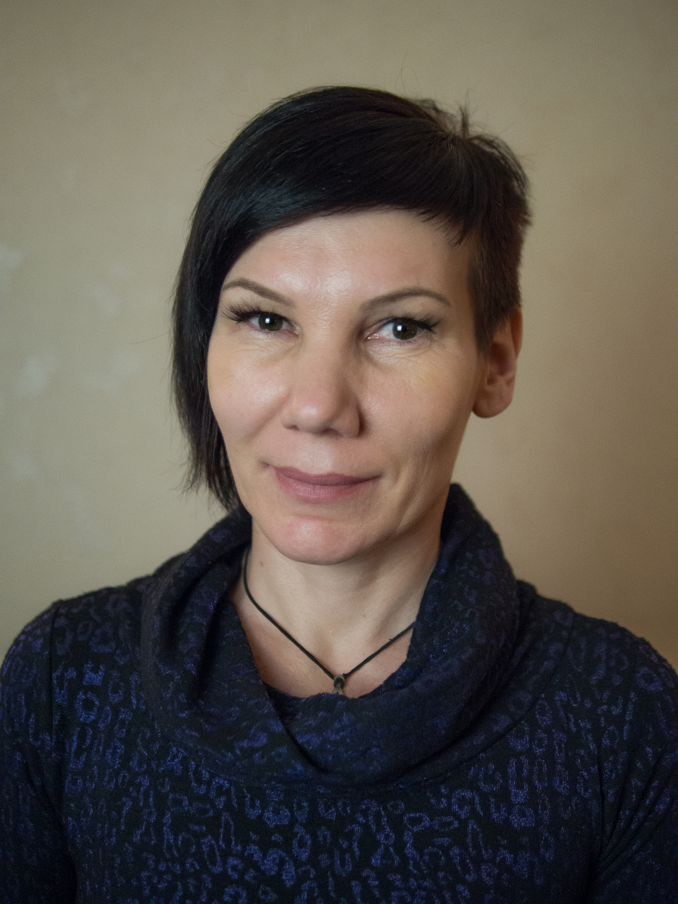
Если вы узнаёте свою ситуацию — вы уже на правильном пути
Ребёнок не говорит или речь развивается с задержкой
Есть подозрение на ЗРР или ЗПРР
Есть признаки СДВГ
Есть признаки аутизма
Непонятны результаты анализов и обследований
Нет ясного плана действий
Нужна профессиональная оценка состояния
Требуется сопровождение в период коррекции
После консультации вы получаете не тревогу и хаос, а понятное направление дальнейших действий.
Специалист по функциональной диагностике и рефлексотерапии, врач ЛФК и спортивной медицины, физический терапевт, кинезиолог, нейрореабилитолог, Войта-диагност, преподаватель дисциплины «Неврологическая реабилитация».
Работает с детьми и взрослыми с неврологическими нарушениями и особенностями развития. Сочетает глубокую диагностику, реабилитационные методики и практическое долгосрочное сопровождение.
Обширный опыт работы в сфере реабилитации
Дети с аутизмом, ЗПР, ЗРР и другими неврологическими нарушениями
Войта-терапия, Bobath, кинезиология, кинезиотейпирование, адаптивная физкультура
Опыт работы с нестандартными и комплексными клиническими ситуациями
Долгосрочное наблюдение и корректировка плана по ходу лечения
Каждая методика подбирается индивидуально, исходя из состояния и задач пациента
Рефлекторная локомоция для активации врождённых двигательных паттернов
Нейроразвивающий подход к восстановлению двигательных функций
Проприоцептивная нейромышечная фасилитация
Диагностика и коррекция через мышечное тестирование
Функциональное тейпирование для поддержки мышц и суставов
Индивидуальные программы физической активности
Комплексные восстановительные подходы
Системный подход к восстановлению функций нервной системы
Доступно из любого города и страны
5 000 ₽
от 7 000 ₽
Через форму на сайте, Telegram или по телефону
Обсуждаем вашу ситуацию и формат работы
Анализы, обследования и историю развития
Детальный разбор и обсуждение
Получаете рекомендации и пошаговый маршрут
При необходимости — поддержка в процессе коррекции
Документы, подтверждающие квалификацию и прохождение обучения
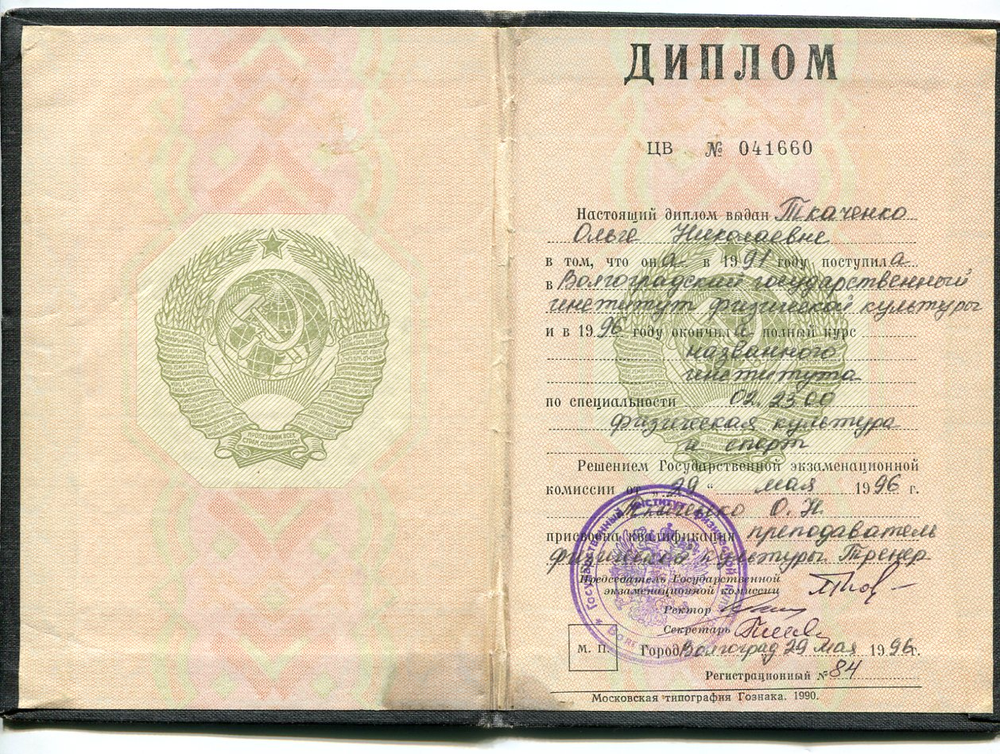
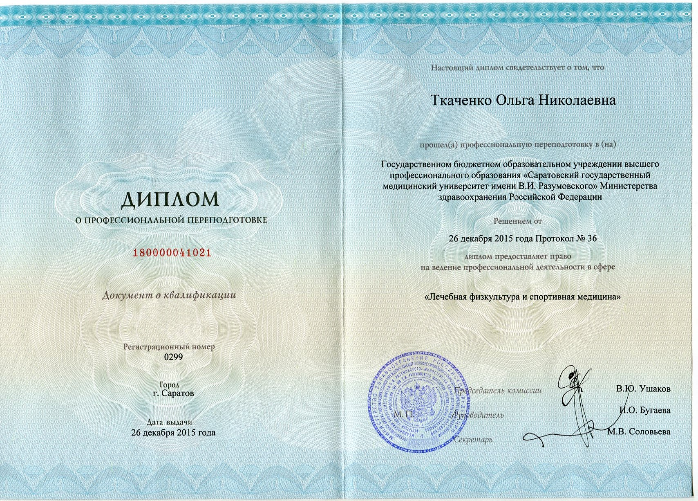
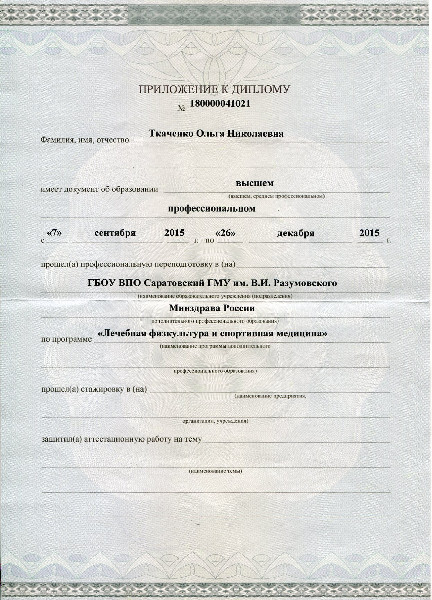
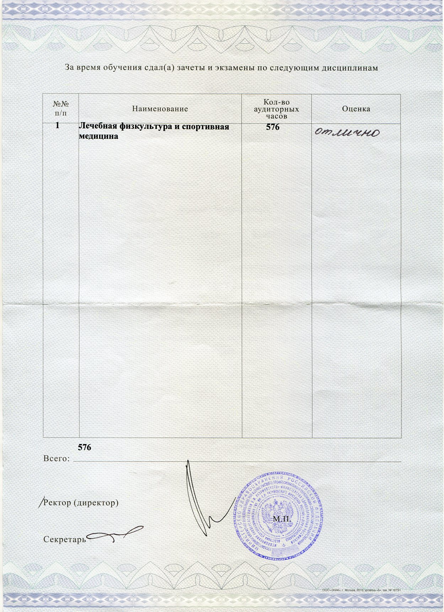
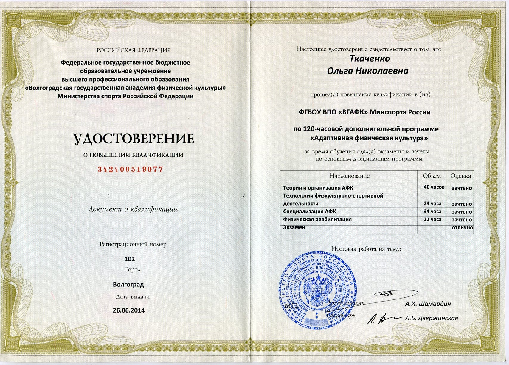
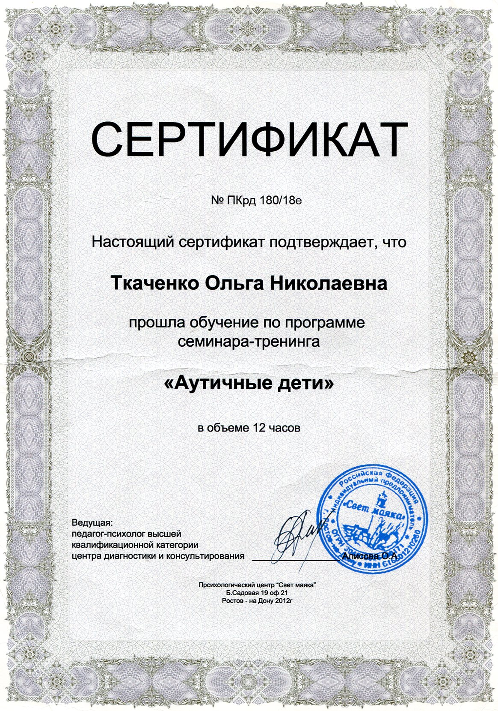
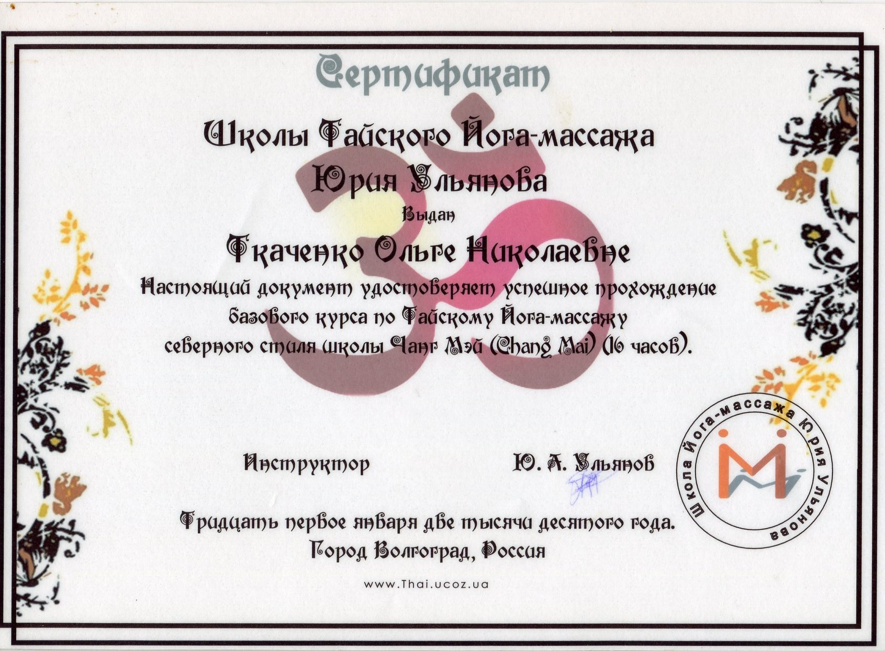
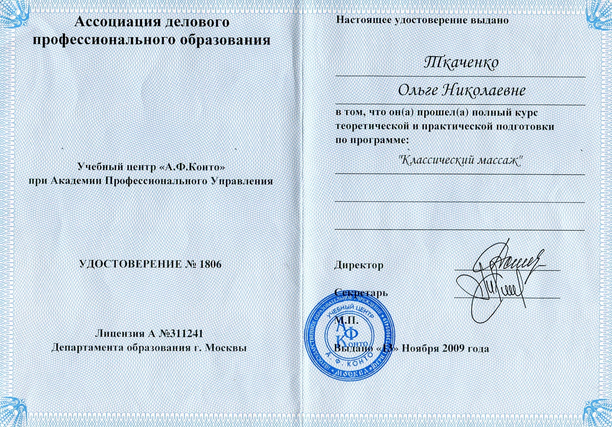
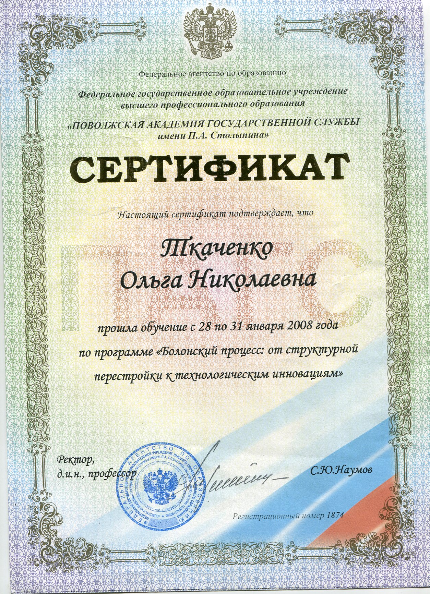
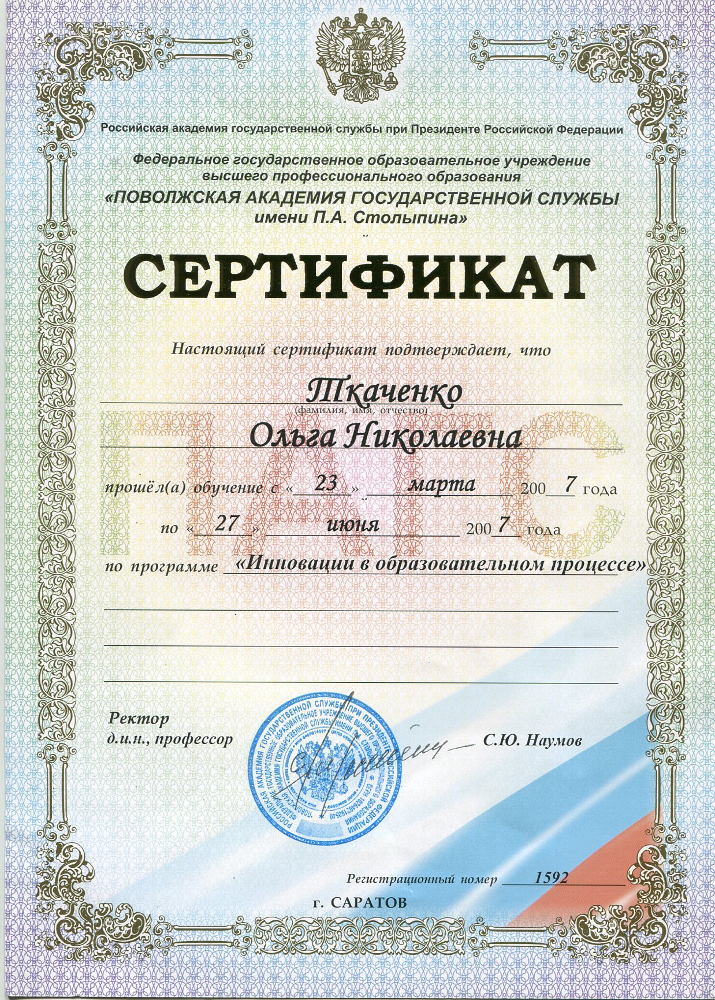
Публичные выступления, интервью и подготовка специалистов
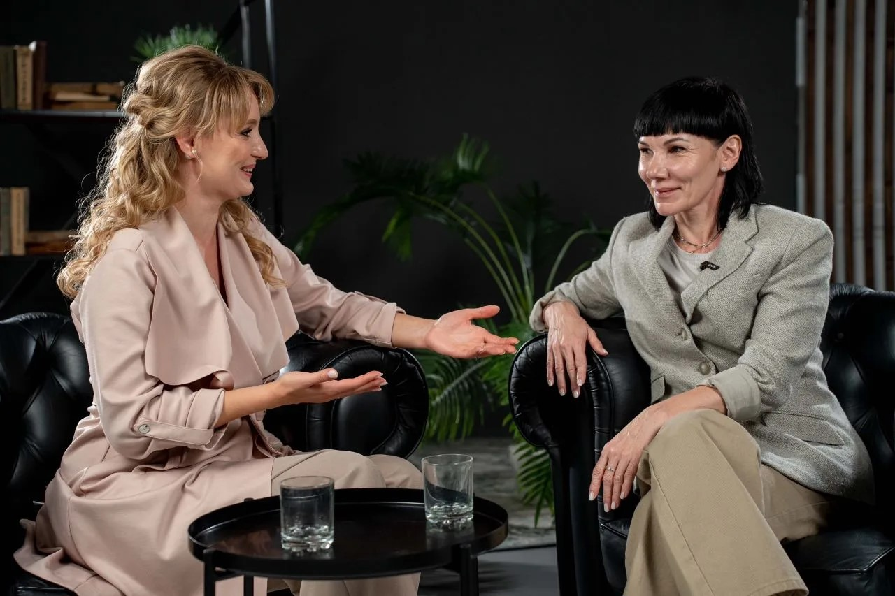
Делюсь экспертным взглядом на нейрореабилитацию детей и отвечаю на вопросы родителей в формате открытых бесед.
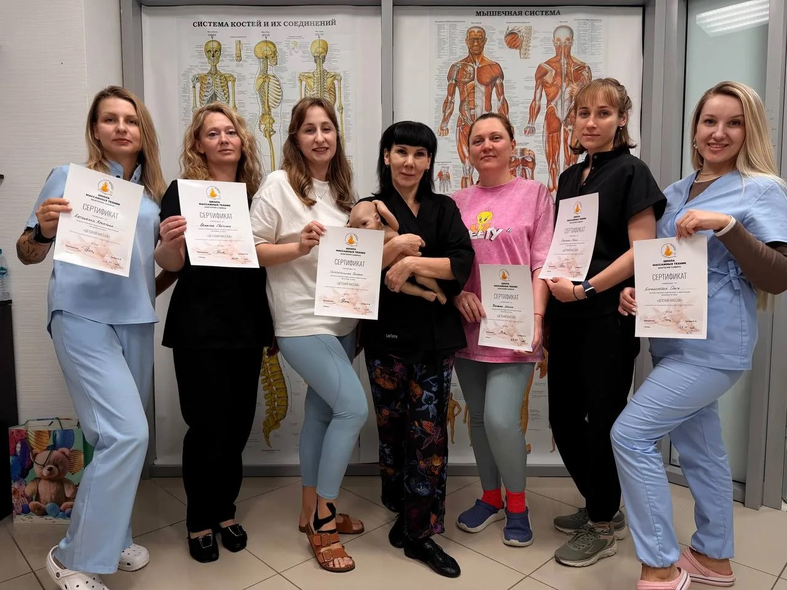
Преподаю практические курсы по детскому массажу и неврологической реабилитации — выпускники получают сертификаты и применяют методики в работе.
Короткие видео о работе и подходе
Реальные сообщения от родителей — скриншоты переписок
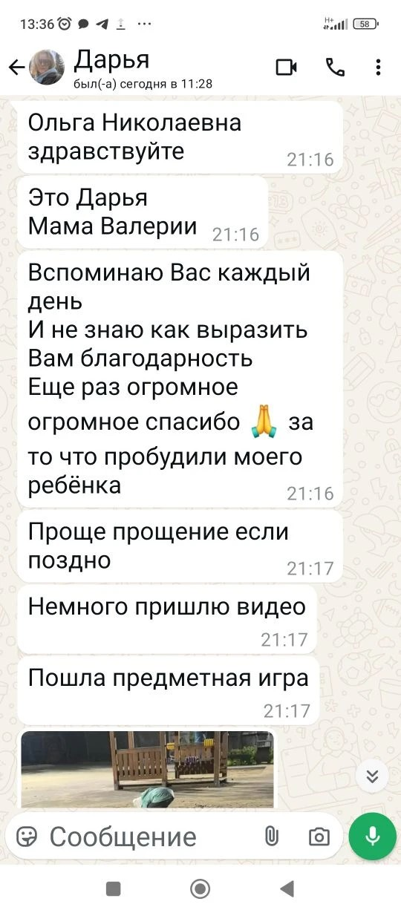
Вы получите профессиональный взгляд на ситуацию, разбор имеющихся данных и понятный следующий шаг.
Записаться на консультацию